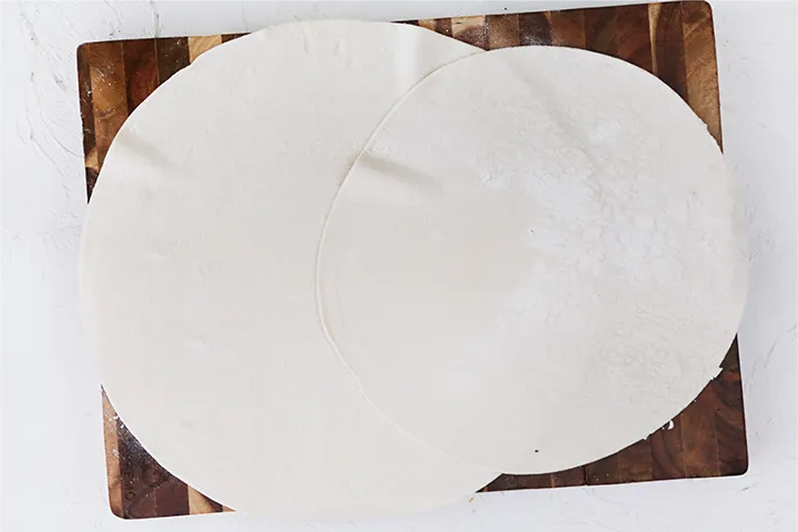

50 минут
50 минут
Ингриденты:
Сыр фета, 150г.
Петрушка, 25 г.
Слоеное тесто, 400 г.
Сливочное масло, 170 г.
Мускатный орех, 1 щепотка.
Шпинат, 100г.
Репчатый лук, 110 г.
Этот рецепт пирог с фетой и шпинатом — упрощенная версия аутентичного, который готовится с тестом фило. Мы же взяли слоеное бездрожжевое, более доступное каждому. И, стоит заметить, получилось просто великолепно! Отдельно хочется сказать о фете: постарайтесь найти максимально приближенную к греческой, в рассоле. Со слишком мягкой, больше напоминающей плавленый сыр, получится немного не то. А вот с зеленью можете экспериментировать сколько угодно, добавляя в начинку пирога с фетой и шпинатом кинзу, укроп, эстрагон, базилик.
Шаг 1
Готовим начинку
Приготовить начинку греческого пирога. Лук очистить и нарезать кубиками. Зелень вымыть, обсушить и измельчить. Если фета хранилась в рассоле, деть ему стечь.
Шаг 2
Разделались со шпинатом
Замороженный шпинат для начинки пирога опустить в кастрюлю с кипящей подсоленной водой на 2–3 мин. Затем откинуть на дуршлаг и дать полностью стечь воде.
Шаг 3
Перемешиваем
В сотейнике разогреть масло. Положить репчатый лук, обжарить, 5 мин., и снять с огня. Добавить шпинат, зелень, сыр и мускатный орех. Посолить и поперчить по вкусу. Перемешать.
Шаг 4
Вырезаем круги из теста
Смазать 1 ч.л. сливочного масла круглую форму для выпечки пирога. Оставшееся масло растопить. На присыпанной мукой рабочей поверхности раскатать тесто, вырезать из него один круг большего, чем форма, диаметра, а другой – точно по размеру формы.

Шаг 5
Лепим пирог
Больший круг положить в форму так, чтобы были закрыты дно и стенки. Сбрызнуть растопленным маслом. Выложить начинку греческого пирога и разровнять кулинарной лопаткой.
Пир!
Запекаем и наслаждаемся
Разогреть духовку до 180 °С. Накрыть пирог вторым кругом из теста, защипать края. Лишнее тесто отрезать. Смазать пирог сливочным маслом. Выпекать 45 мин., до образования хрустящей корочки.
120
Поделиться статьей